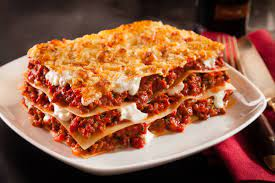

Lasagna

Description
The favorite italian food, the most delicious plate.
Ingredients
- Cheese
- Sauce
- Meat
- Ricotta
Steps to follow
- Prepare the meat and ricotta in the bowl.
- To grate the cheese.
- Colocar capa por capa los ingredientes y entre medio las tapas de lasagna.
- Poner en el horno y listo, servir.
Return | Next